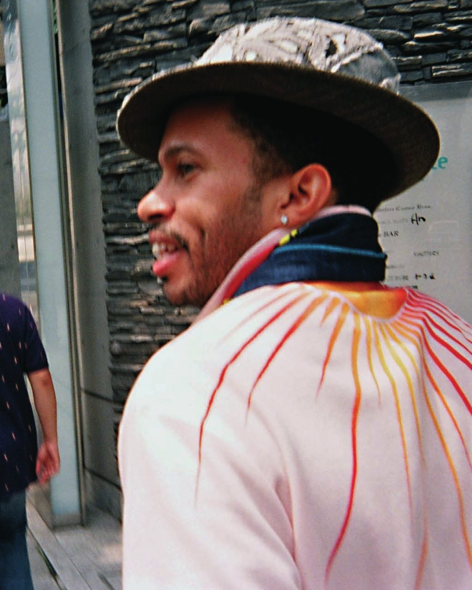

Anthony
“TonyMagnetic”
Thorne
Designer, brand builder and product man. Thirty years between New York, Munich, Hong Kong and Ho Chi Minh City.

Some people in fashion design clothes. Tony builds the thing that makes clothes possible — the brand, the product line, the route to the floor.
It started properly in the summer of 1995, when he moved to New York City to launch Mecca USA with Tony Shellman and Lando Felix. Streetwear was in the middle of becoming an industry, and Mecca was one of the labels that showed it could be run like one: real product, real distribution, a real business behind the graphics.
What followed was a working life organised around markets and what each one was ready for. A retail platform in Munich, translating American street product for European shop floors. A denim line, The Year of…, profiled by the South China Morning Post in 2007 and built on the idea that a pair of jeans could hold its own next to a luxury house without adopting the house's exclusivity. His own label, Tony Only Tony. Behind all of it, TonyMagnetic INC has held its own trademark since 2002, and now works out of Ho Chi Minh City, within reach of the factories that make the clothes.
What carries across the chapters is a method: get close to the culture, get closer to the manufacturing, and refuse to let either one excuse a weak garment.
Where the work happened
-
New York — Mecca USA
Moves to New York City to launch Mecca USA with Tony Shellman and Lando Felix, at the moment American streetwear turns into a category with a market behind it.
-
Munich — retail
Builds a retail platform in Germany. Augsburg, Bad Aibling and Munich all turn up later in his own list of the places the work took him.
-
TonyMagnetic INC
The house takes its own name and its own trademark. Every volume of The Year of… would be published under it.
-
The Year of… — Volumes IV, V, VI
Dog, then Golden Pig, then Rat: one collection per zodiac year, each a bound catalogue of its own. Seven styles, twelve months, an edition of 1,200 raw and 800 laundered. The South China Morning Post profiles him in 2007.
-
Tony Only Tony
A personal label carrying his own taste directly into product.
-
Ho Chi Minh City
Working within reach of the manufacturing base, across the full apparel range — and, these days, food as well.
Small things, long held
L'Eau d'Issey Pour Homme, because it works everywhere and doesn't announce itself. A classic two-button suit in black — Prada or Armani — when the occasion calls for one. Taste is mostly a set of decisions you stop having to make twice.
Let's make something
Open to brand development, product and denim consulting, sourcing partnerships, and collaborations.
Get in touch